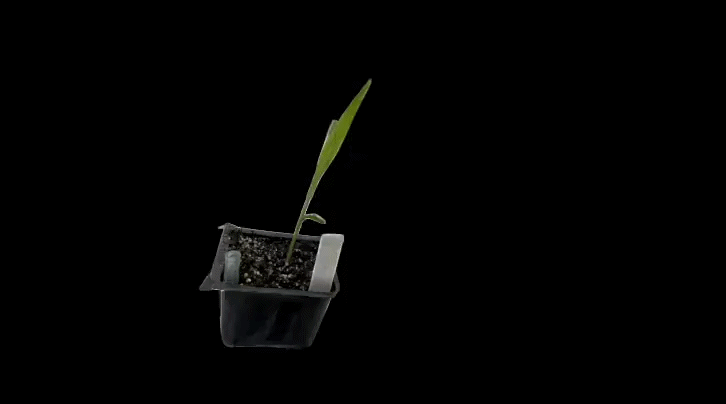
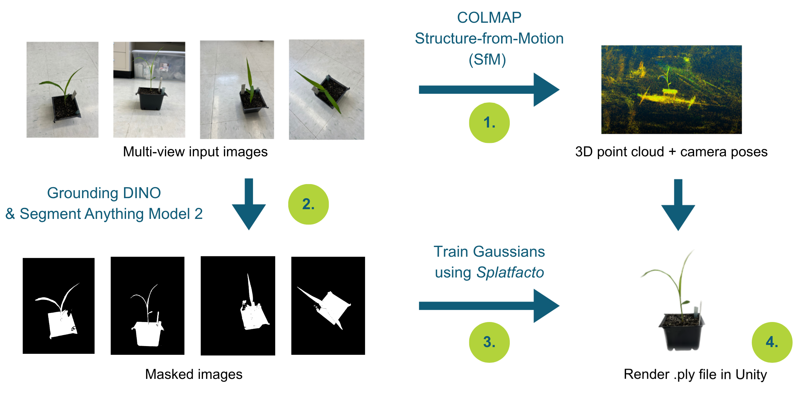

Introduction¶
This project was supported by Brookhaven National Laboratory under the Supplemental Undergraduate Research Program (SURP) for the Spring 2026 term. Under my mentor Dr. Wei Xu’s guidance, I explore adapting current 3D Gaussian Splatting practices to reconstruct isolated objects, rather than full scenes. In particular, we examine reconstructing a sorghum plant.
The project repository can be found on my GitHub. This documentation site is based on fellow intern Jasmin Lin’s documentation on a similar project.

What is 3D Gaussian Splatting?¶
3D Gaussian Splatting (3DGS) is a technique that transforms multi-view images into a 3D representation with real-time rendering. This approach offers accurate geometry representation through a collection of 3D Gaussians with ellipsoid shapes, containing position, size, color, and opacity attributes.
3DGS Pipeline (Overview)¶
This pipeline reconstructs a 3D object-centric representation of a plant from multi-view images using 3DGS, enabling real-time rendering in Unity Engine.
The pipeline consists of four stages:
Reconstruction — Camera poses and a sparse point cloud are extracted from multi-view images to initialize the 3DGS model. See Setup for details.
Segmentation — Binary foreground masks are generated to isolate the plant from the background. See Segmentation for details.
Training — The 3DGS model is trained with the segmentation masks, removing background Gaussians and producing a clean object-centric reconstruction. See Training for details.
Rendering — The trained Gaussian model is exported and rendered in Unity Engine for real-time interactive viewing. See Rendering for details.
